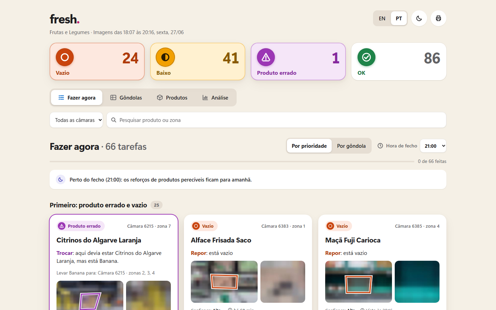

Repor
Restock. The area is empty or running low.
For Sensei · JunctionX Lisbon 2026
The ceiling cameras Sensei already runs, turned into one to‑do list for the produce shelf.

Camera 6215
The banana trays are empty. The banana crates are full of oranges.
The plan says where things go. The camera sees what is there.
For the staff
Restock. The area is empty or running low.
Wrong product. Swap it back to what the plan says.
Leave it alone. Nothing to do here.
For the manager
8×
In a one-day backtest, areas we flagged emptied within about two hours 8× as often as the rest: 32% vs 4%.
An estimate from time on display and the product's shelf-life class, using a sourced table Inês reviewed for 94 products. Not something the camera sees.
Inês Matias Medeiros' ethylene score for products shelved side by side:
max(producer A × sensitivity B, producer B × sensitivity A)
A layout suggestion, not an alarm.
How it works
Each planogram area is warped into its own straight-on crop.
DINOv2-small learns what an empty crate looks like from the store's own pictures. No labels.
CLIP ViT-B/16 names the product zero-shot, straight from the catalogue.
Small heads and a per-area memory, trained on an AI-made answer key: 1,962 areas, 181 pictures, 3 AI votes per area. No human labelling, never on validation pictures.
Answers that maximise the expected score under the challenge's own rules. Too full costs most, so when unsure it answers lower.
For every planogram area in every ceiling-camera picture of the produce section (14 cameras, Leiria store), it answers Sensei's two questions, right product? and empty, half or full?, in the challenge's annotations.json format.
Results
1.41–1.48/2
points per area on the latest held-out frames. Always answering "right product, full" scores 0.18–0.46.
99%
of empty shelves caught: 181 of 182.
2
false wrong-product alarms in 1,845 correct areas.
1 in 4
The honest limit: on a brand-new camera it finds about 1 wrong product in 4 (31 of 117) until it is calibrated.
Scored on our AI-made answer key, not Sensei's annotations.
Cost
3.8 CPU-seconds · one core · no GPU · ~$3/month per 14-camera section
About 5 cents per 1,000 images, roughly 300× cheaper than asking Claude Sonnet about each picture. That compares cost, not accuracy.
Try it yourself
> git clone https://github.com/sergiokutspires/junctionx-2026
> cd junctionx-2026
> SUBMIT.batFree open models (CLIP, DINOv2, optional OWLv2) on PyTorch CPU. Fingerprinted models, byte-identical predictions across rebuilds, 200 tests, and a clean-room test that reproduced the scores exactly.
The ask
It runs on the live frames; nobody acts on it. We compare it with the restock logs.
Same setup, a store it has never seen.
What it caught, what it missed, in plain numbers.
What we need: a frame feed and one contact.